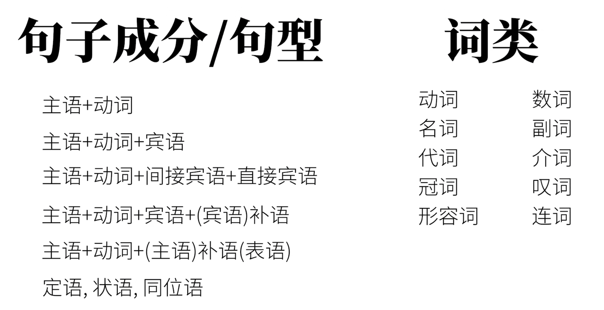

从句（Clause） 8¶
- 从句的原理
- 从句的分类
从句的原理¶
一个句子是另一个句子的成分，就出现了一种主从关系。主句（Main Clause）和从句（Subordinate Clause）一同构成复杂句。
我们在语法综述中讲过这个复杂句的概念。一起回顾一下英语的三种句子。
- 简单句 Simple Sentences 不能继续拆分
- 复合句 Compound Sentences 不分主次
- 复杂句 Complex Sentences 主从关系
ps: 有些书上，喜欢将Complex Sentence称为复合句，而将Compound Sentence称为并列句，这可能会造成一些误导。如果一定要这样讲，请将 component sentence称为并列复合句，将Complex Sentence称为主从复合句。
从句的分类¶

给句子分类，可以按照从句充当的句子成分划分：
- 其实除了句子中的谓语动词，其他任何成分都可以用从句充当：
- 主语从句，宾语从句，宾语补语从句，主语补语从句（表语从句），定语从句，表语从句，同位语从句。
当然，也可以使用词类进行划分，一共三大类：
-
名词性从句
-
主语从句，宾语从句，宾语补语从句，主语补语从句（表语从句），同位语从句。这些一般相当于一个大名词，所以叫名词性从句。
-
国内教学往往忽略宾语补语从句，因为他出现较少。
-
-
形容词性从句
-
定语从句。往往相当于一个大形容词。
-
定语从句需要用到关系词，所以也叫做关系从句。
-
关系从句 == 形容词性从句 == 定语从句
-
-
副词性从句
- 状语从句
- 时间、地点、条件、方式、原因、比较...
- 状语从句
那就从三大类入手：
一、形容词性从句 （定语从句）¶
像这样：
The rabbit is eating a carrot that I bought. The teacher who ate a carrot is a rabbit. The teacher whom I saw yesterday is a rabbit. The teacher whose favorite food is carrot is a rabbit. The food which the teacher likes is a carrot.
-
我们先说最重要的关系词。其实在这些从句中，除去关系词
that,who,whom,whose,which，其他词在陈述句的语序是一样的。所以你可以想象：先将一个陈述句的某个成分替代成关系词，然后将关系词全部前置就构成了从句。关系词分为关系代词和关系副词-
关系代词：
which和that- Which 和 That 这两个关系词经常可以互换，他们的区别是：
- 如果先行词唯一没有其他可能时：that
-
如果先行词多选一：which > The rabbit ate the largest carrot that I've ever seen. > all the rabbits that ate a carrot > the only rabbit that ate a carrot > the first rabbit that ate a carrot
-
这些
all,the only,the first, `the largest表明了很明确的对象(兔子)，所以用that -
The rabbit ate a carrot which I bought.
- 世上萝卜千千万，carrot是哪一个？？？然后从句限定一下：是我买的那个。这时用which。当然也可以用that。
- 如果你在从句之前，没有发问：你说的是哪一个萝卜啊？那么就说明可以用that。相反的，如果你可以在从句出现之前发问，那么which和that都行。
- 世上萝卜千千万，carrot是哪一个？？？然后从句限定一下：是我买的那个。这时用which。当然也可以用that。
-
-
关系副词：
where,why,whenThis was the place where the rabbit ate the carrot. This is the reason why the rabbit ate the carrot. That was the day when the rabbit ate the carrot for the first time.
- 你肯定看出来了，既然是副词，那么一定有修饰的对象： where 修饰 place，why 修饰 reason，when 修饰 day。这些关系词和上面的关系代词不同，他们在从句中的词类不是代词，而是副词。所以叫关系副词。当然我们可以将关系副词转化成关系代词。
This was the place at which the rabbit ate the carrot. This is the reason for which the rabbit ate the carrot. That was the day on which the rabbit ate the carrot for the first time.
- 很容易看出：关系副词 == 介词 + 关系代词
-
-
然后我们说说形容词性从句的两种类型：限定性从句和非限定性从句
- 限定性
- The rabbit ate a carrot which was on the table.
- 兔子吃了个在桌子上的胡萝卜。
-
非限定性
- The rabbit ate a carrot, which was on the table.
- 兔子吃了个胡萝卜，胡萝卜在桌子上。
- 你甚至可以这样感受这句话：The rabbit ate a carrot, the carrot was on the table （虽然语法不对，你可以这样理解：这是两句没有关系的话） 完全可能只有一根胡萝卜，而且恰好在桌子上。
-
你如果没弄清，请比较：
I have a head which is round. 限定性 I have a head==,== which is round. 非限定性
第一句言下之意是：我有好几个头，有方的有扁的，但是这个是圆的。
第二句言下之意是：我有一个头，而我这个头是圆的。
- 我认为“限定”这两个词需要绕一个弯：所谓限定不是指 限定完成后的状态（就剩一个了）或者说 此限定不是代表 我的从句是用来（或者说是限定）这个词的 的意思，而是指 限定过程中的状态（一种“多选一”的意思，限定ing）或者说 限定代表的是==限定万千这种词中的一个==。（限定的是这么多词代表的那么多事物中的某一个事物，而不是限定这个词，“我修饰的就是她”。）
-
非限定性这种“句子带有并列感，非限定的、接着补充”的性质，往往可以用来做句子的插入语。
- My head, which is big, is useful when it rains.
- The biggest carrot, which the rabbit ate, was on the table.
- 这一句正是因为非限定的，前面加
biggest一点问题没有，如果这样说~~The biggest carrot which the rabbit ate, was on the table.~~就是错的了（the biggest和which是冲突的）
- 这一句正是因为非限定的，前面加
-
非限定性还有一个强大的功能，就是代指前面的整个句子。
- The rabbit ate the carrot, which was not surprising. 兔子吃胡萝卜，这事一点也不奇怪。
- 这里的which，既不代指rabbit，也不代指carrot。而是前面的句子The rabbit ate the carrot这个事 一点也不吃惊。
- 限定性
二、名词性从句¶
①主语从句¶
-
That the rabbit ate a carrot is obvious.
- 翻译成中文：兔子吃胡萝卜是明显的。这样翻译可能会让你断句失败，因为中文中我们没有像英文中从属连词(上述句子中that)这样的标志。当英美人士听到这句话的that，他们会本能反应出这是个从句，使句子的一部分而已。而对于我们中文，我们往往这样翻译比较好理解：兔子吃胡萝卜这件事是明显的。
-
不确定信息也可当主语：
Whether the rabbit ate the carrot is obvious. 兔子是否吃了胡萝卜是明显的. Where the rabbit ate the carrot is obvious. 兔子哪里吃的胡萝卜是明显的. When the rabbit ate the carrot is obvious. 兔子什么时候吃的胡萝卜是明显的. How the rabbit ate the carrot is obvious. 兔子怎样吃地胡萝卜是明显的. Who ate the carrot is obvious. 谁吃了胡萝卜是明显的 What the rabbit ate is obvious. 兔子吃的什么是明显的
-
形式主语
-
上述的从句，说了半天才知道：原来就是某件事很明显啊。这样头重脚轻的问题，在英文中常用形式主语来解决。
-
It is obvious that the rabbit ate a carrot.
-
It这里本身没有实际意义，只是代指后面的句子。也就是说放在后面的从句才是真正的主语。That the rabbit ate a carrot is a secret. \(\rightarrow\) It is a secret that the rabbit ate a carrot. That the rabbit ate a carrot was discussed. \(\rightarrow\) It was discussed that the rabbit ate a carrot. That the rabbit ate a carrot happened. \(\rightarrow\) It happened that the rabbit ate a carrot.
Whether the rabbit ate the carrot is obvious. \(\rightarrow\) It is obvious whether the rabbit ate the carrot. Where the rabbit ate the carrot is obvious. \(\rightarrow\) It is obvious where the rabbit ate the carrot. When the rabbit ate the carrot is obvious. \(\rightarrow\) It is obvious when the rabbit ate the carrot How the rabbit ate the carrot is obvious. \(\rightarrow\) It is obvious how the rabbit ate the carrot. Who ate the carrot is obvious. \(\rightarrow\) It is obvious who ate the carrot. What the rabbit ate Is obvious. \(\rightarrow\) It is obvious what the rabbit ate.
-
②宾语从句¶
-
确定信息&不确定信息
-
确定信息：
- I saw that the rabbit ate a carrot.
- 这里的that the rabbit ate a carrot是一个确定信息。
-
不确定信息：
I saw whether the rabbit ate the carrot.
I saw who ate the carrot.
I saw what the rabbit ate.
I saw where the rabbit ate the carrot.
I saw when the rabbit ate the carrot.
I saw how the rabbit ate the carrot.
除了某些介词参与的情况，引导词基本都在从句开头。
-
-
宾语从句
that的省略- I know (that) the rabbit ate a carrot.
- 这种省略往往会使人觉得：为什么一个句子有两个谓语动词？这需要你判断出这里有个宾语从句，两个谓语动词分别是主句的动词和从句的动词。
- 引导词
what,who,how,which,where等不能省略。 - 有时
that也不能省略，省略会使句子产生歧义。- I didn't konw that the rabbit ate the carrot and that you saw it.
- I didn't know the rabbit ate the carrot and you saw it.
- 请比较上述两句话，第一句是两个宾语从句，含义是：首先我不知道兔子吃了胡萝卜，其次我不知道你看见了。
- 第二句是省略两个
that,第一个从句省略了还好，但是第二个从句的衔接处有一个and，可能会被误解为一种确定的陈述you saw it，这不是原文想表达的didn't konw。
- 当有插入语的情况是也不要省略：I know, just like you do, that the rabbit ate the carrot. 这里如果省略了
that，会使人一下子反应不过来是一个从句，让人觉得有语病
- I know (that) the rabbit ate a carrot.
-
某些词后的宾语从句的否定。
正确示范：
I don't think (that) the rabbit is smart. I don't believe (that) you will give me some coins. I don't expect (that) you will give this video a thumbs-up.
错误示范：
I think(that) the rabbit isn't smart. I believe (that) you won't give me some coins. l expect (that) you won't give this video a thumbs-up.
-
主从时态一致
- 主句时态 == 宾语从句时态
- I knew (that) the rabbit liked carrots.
- 虽然
liked表示一种习惯，但是由于主句使用了一般过去时态，从句like要进行变位。
- 虽然
- I knew that the sun rises in the east.
- 只有描述客观规律，永恒现象时可以不用变位。
-
be + 形容词 + that
-
ps: 首先说明：词类句型存在归类上的极大争议。
I am sure that there's a carrot on the table. I am happy that there's a carrot on the table. I am afraid that there's no carrot on the table.
大约有三种争议：
- 宾语从句：这类句子翻译成中文：我很确定...... 我很高兴..... 这样的用法和谓语动词后接动作的承受者十分相似。就相当于
I confirm that....我很确定..... - 同位语从句：上述句子可以相当于：
I am sure of the fact that...,I am happy about the fact that...这样看that引导的从句就是一个同位语从句 - 状语从句：I am happy because ...像是原因状语从句。
不过是什么分类不重要，我是为了学习知识，不是为了学术研究的。
- 宾语从句：这类句子翻译成中文：我很确定...... 我很高兴..... 这样的用法和谓语动词后接动作的承受者十分相似。就相当于
-
③表语从句¶
-
即用一个句子充当主语补语/表语，主要的系动词是be动词。
The problem is that the rabbit is hungry. The reason is that there's no more carrot. The question is whether the rabbit is hungry. The question is what the rabbit should eat. The question is where/when /how the rabbit should eat the carrot.
- 表语从句和主语从句之间，是一种“倒过来”的关系。如：
- That the rabbit ate a carrot is a secret. 主语从句
- The secret is that the rabbit ate a carrot. 表语从句
- 两者的区别在于说话者想要强调的信息。
- 表语从句和主语从句之间，是一种“倒过来”的关系。如：
-
非be动词做系动词
- 前面说过feel, seem, look....也可以做
- It seems that the rabbit is hungry.
- It feels that you're not telling the truth.
- 上面两句中
It其实是形式主语，但是没有任何实际意义。这和主语从句的后置并不一样！！句子的核心部分在后半部分。
- 前面说过feel, seem, look....也可以做
④同位语从句¶
- 同位语成分用句子充当就是同位语从句了。
- I like my teacher, Papa Rabbit, likes carrots. 同位语成分
- 同位语从句往往修饰抽象名词，用于解释。（同位语从句与定语从句的区别请见底部）
- The fact that the rabbit ate the carrot did not surprise me.
- The question whether the rabbit ate the carrot is on all our minds.
- I have no idea who ate the carrot.
⑤宾语补语从句 （此类从句有些资料不做收录，略讲）¶
- You can call me what you like.
- My education make me who I am today.
三、副词性从句¶
- 副词性从句在句子中起到副词作用，一般补充说明动词，形容词，副词等，也称为状语从句。
- 句子中状语做补充信息有多种可能，故种类繁多，共9种。
①表时间（在...之前）¶
Before在...之前- The rabbit ate a carrot at home before the wolf stopped by.
- Before the wolf stopped by, the rabbit ate a carrot at home.
When,While,As当时- The rabbit was eating a carrot when I reached home.
- 我到家的时候，兔子正在吃胡萝卜。
- The rabbit was eating a carrot while I was making video.
- 我在做视频的过程中，兔子在吃胡萝卜。
- I ate a carrot as I made the video.
- 我一边吃胡萝卜一边做视频。
when表示“突然”，在某一个时间点while表示在一个时间段内as表示同时，一边...一边...
- The rabbit was eating a carrot when I reached home.
After在某一时间点之后- The rabbit ate a carrot after the wolf stopped by.
Since从之前某一时间点开始算- 这样的往往会对后续产生影响，所以要使用完成时态。
- The rabbit has shared three carrots since the wolf stopped by.
- The rabbit has not stopped sharing carrots since the wolf stopped by.
Until直到之后某一时间- The rabbit waited unilt the wolf stopped by.
As soon as一...就...- The rabbit will eat a carrot as soon as the wolf leaves.
The next time下次- The rabbit will share the biggest carrot the next time the wolf stops by.
②表地点（在...地方）¶
-
主要由
where和它的强调形式来引导(anywhereeverywherewherever) -
The rabbit ate the carrot where he found it.
- 比较地点状语从句与定语从句的区别：
- The rabbit ate the carrot where he found it.
- The rabbit ate the carrot at the place where he found it.
- 第二句是定语从句，它是起到修饰先行词
place的作用。
- 第二句是定语从句，它是起到修饰先行词
- This is where he found the carrot. 表语从句
- Where he found the carrot is a secret. 主语从句
- 光看见
where还不能确定是什么从句
The rabbit will go where he can find a carrot. The rabbit will go wherever he can find a carrot. 强调：“不管"哪里 The rabbit sees a carrot everywhere he goes. 强调：“所有” == every place where（定语从句） The rabbit can eat a carrot anywhere he likes. 强调：“任何” == at any place where
- 比较地点状语从句与定语从句的区别：
③表条件（如果...）¶
- If
- 这地方的假设句，是真实的假设。与过去讲过的虚拟语气不同（虚拟语气的假设，是与事实相反的假设）
- If the rabbit sees a carrot, he will eat it.
- 这里要纠正一个误区 “主将从现”，这个记忆口诀不是那么的精准。它就无法解释虚拟语气，如：If the rabbit saw a carrot, he would eat it.
- 之所以从句使用了一般现在时态，还是因为我们前面说过的：英语中将来时态表示明确在将来发生的动作。但既然你是假设，那么一定不敢说肯定。
- 你可以说条件句从句要落后主句一个时间段。
- Unless (If反着说)
- If you like this video, you will give it a thumbs-up.
- 如果你喜欢这个视频，你会给它点赞。
- 改一下 If you don't like this video, you will not give it a thumbs-up.
- 上面就可以改成 Unless you like this video, you will not give it a thumbs-up.
- 如果你不喜欢这个视频（除非你喜欢这个视频），你不会给这个视频点赞。
- If you like this video, you will give it a thumbs-up.
- Provided
- Provided that my video is excellent, you will give it a thumbs-up.
- 如果我的视频很棒，你会给它点赞。
- As long as
- As long as I make excellent videos, you will remain my follower.
- 只要我一直做高质量视频，你就会继续关注我。
- In case
- In case you don't understand, please comment below.
- 如果你不明白，请在下方评论。
④表让步（虽然...但是...）¶
- 阐述某种情况或者做出某种假设，然后做出相反的动作（让步） 即使...也...
- 假设型：Even if I see a carrot, I will not eat it. 和条件句很像，但是是相反动作。
- 事实型：Although I see a carrot, I will not eat it. (
Although可以用though,even though替代) - No matter + 疑问词 不管什么事情发生，可以使用regardless替代。
- No matter what happens, I will not eat the carrot.
- No matter who orders me, I will not eat the carrot.
⑤表方式（就好像...）¶
- 表示“正在”发生的方式
- Eat the carrot as I do.
- Leave the carrot as it is. 别动这个胡萝卜
- 提出一种假设的方式
- I feel good as if I had just eaten a carrot.
- 注意和虚拟语气的区别
- If I had eaten a carrot, I would have felt good.
- 前者主句
I feel good是真实的情况，虽然后面的从句是假想的情况。但是虚拟语气则与之不同，因为从句为并没有真实发生的，主句的情况也不是真实的。
⑥表比较（比...）¶
- Than
He is smarter than me口语形式- He is smarter than I am.
- This carrot is bigger than that one is.
- As _ as
- He is as smart as I am.
- She is as beautiful as Snow White is.
- The + 比较级 ... , the + 比较级 ...
- The more you practice English, the more fluent you become.
⑦表原因（因为...所以...）¶
- Because 因为
- Because this video is excellent, you should give it a thumbs-up.
- Since 既然
- Since all my video are excellent, you should give this video a thumps-up
- As 因为
- As I have thick skin, I'm begging you for a thumps-up.
- 不同点：
- 三者不同1：语气上 Because > Since > as.
Because实实在在的因果Since引出大家都知道的情况As表示显而易见的视频。上面三个例句可以理解一下。 - 三者不同2：
Because引导的从句在主句前后都可以，而其他两者只能一般只能放在主句之前。
- 我们有时候也会遇到
for来表示因果，但是这两者大有不同，请比较：- Because you like me, you have given all my videos a thumbs-up.
- 因为你喜欢我，所以你给所有英语兔视频都点赞了，
- You must really like me, for you have given all my videos a thumbs-up.
- 你一定喜欢我，因为你给所有英语兔视频都点赞了.
- 请注意，for构成的不是原因状语从句，而是复合句。这两句有着相同的地位，不是Because那样的复杂句（带有主从关系）。
- for 一般前句表示推测，后句表示推测的原因。他可不是Because的弱化语气版。
- Because you like me, you have given all my videos a thumbs-up.
⑧表目的（为了...）¶
- 也有一定因果关系，只不过使用目的的方式说出来的。
- In order that I could finish the video in time, I pulled an all-nighter. 为了完成这个视频，我熬夜不睡。
- 基本 == I pulled an all-nighter so that I could finish the video in time.注意so that不能放在句首
- 常常使用情态动词 could, might...来更明显地表达目的性。
⑨表结果（所以...）¶
- 也有一定因果关系，只不过用结果的方式说出来。
- 也可以用so that
- I ate a lot of carrots for lunch so that I wasn't hungry at all in the afternoon.
- so ？好像也是结果
- so 是复合句，并列复合句，不是主从关系的连接词。这和 because 和 for的关系很像。
- So ... that ...
- Such ... that ... （
such后加 名词）
先简单粗暴说一下，当别人说他有一个好的建议，但是绕了半天也没说出来到底是啥好主意，那么他基本用的就是定语从句；比如 I would like to propose a good suggestion that might sound weird to you. 我有一个好的建议，一个你听起来可能比较奇怪的建议。相反如果他说的话让你知道这个建议的内容是什么，那么他用的就是同位语从句， I would like to propose a good suggestion that we should pay more attention to grammar.
首先来扯一点别的，定语从句，它的重点在于一个定字，定语从句，首先它是一个句子，是一个句子的话，它就要有自己完整的主谓结构。定语从句就是把一个东西的性质给确定界定下来下来的成分。定语从句，它是一个外围的东西，它是事物外围的属性，它只是用来表达事物的一个属性，而不是事物本身。
而同位语恰恰相反，同位语就是事物本身，同位语和它前面的成分就是一个东西。定语从句是用一个句子来表达前面那个词的一种属性，而同位语从句则是用一个句子从另外一个角度来描述前面那个词。定语从句，从本质上讲，它就是指事物的某一个属性。而同位语从句从本质上讲，它就是这个事物本身，只不过它提供了另外一个角度的描述。
要回答这个问题，首先你要明白什么叫做定语从句和同位语从句。打一个比方吧，定语从句就好像是你的衣服，衣服对你起个修饰的作用，让你看起来更漂亮，或者让你觉得更暖和。在你和衣服之间，你才是重要的，衣服只是对你起一个装饰的作用。而同位语从句, 就是你自己，只不过是从另外一个角度去看你。同位语从句不是你的衣服，它就是你自己，是另外一个角度的你。比如你是一个学生，同时，你是你父母的孩子；同时你又可能是马路上的一个路人，是电影院里的一个观众，是商场里的一个顾客，是某一个事情的旁观者或者参与者。也就是说同一个你在不同的情况下会扮演不同的角色，而同位语就是从不同角度来描述你。无论从那一个角度去描述，描述的对象都是你自己。这是在本质上说明定语从句和同位语从句之间的区别。
在具体的语法规范上两者之间的区别在很多资料上都有表述，这里就不赘述了。你只需要记住一点，并不是所有的名词都可以接同位语从句的，在英语中只是一些表示抽象概念的名词通常才会接同位语从句。而什么叫做抽象？可以这样来顾名思义的来理解，那就是在一系列的现象当中抽出他们共同的特征，我们可以这样来理解抽象。也就是说像英语当中的idea, fact, doubt, information, news等等，都是可以用来作为引导同位语从句的抽象名词。抽象名词一般比较宽泛，比较空洞。
从另一个角度来看，同位语从句是对把前面的先行词的一种解释，而定语从句这是为了说明前面的先行词是什么样的，是给先行词定性的。